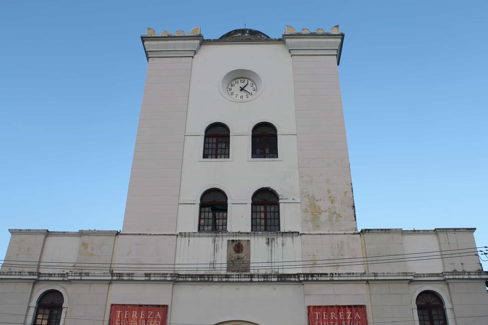
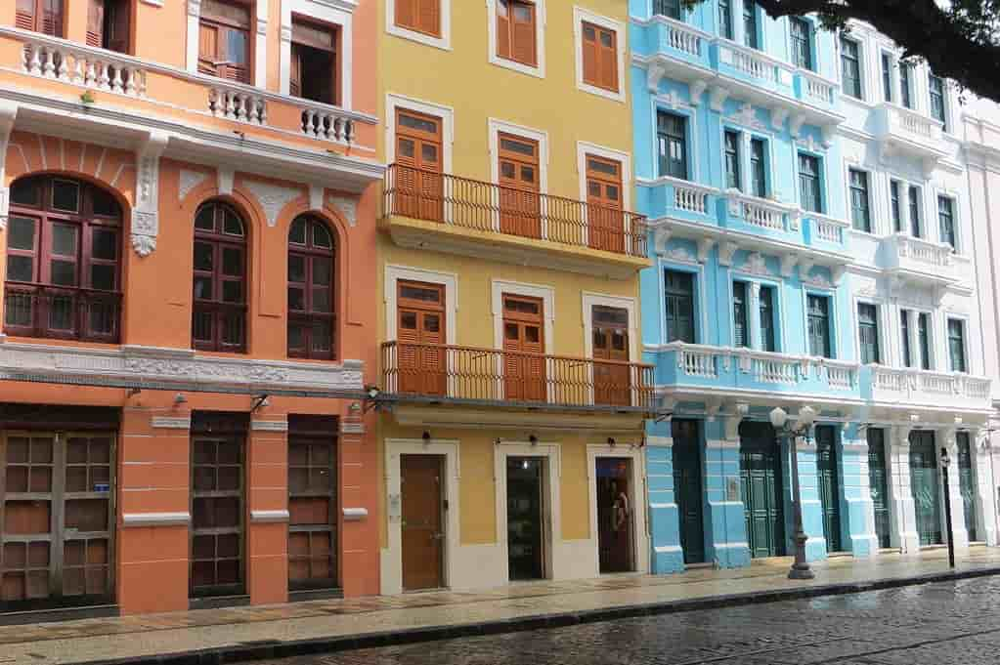
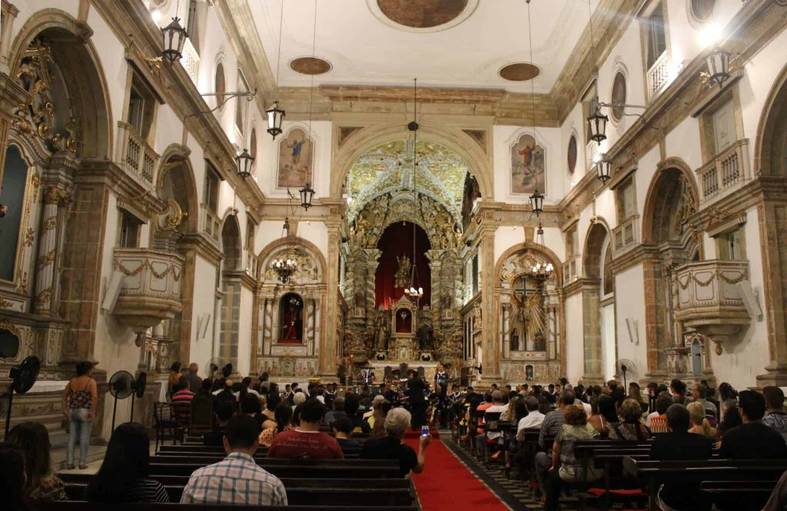

Pontos Turisticos de Refice
Torre Malakoff
Considerada como um dos principais centros culturais da cidade. Esta torre foi construída no dia 19 durante a Guerra da Cromia. Hoje ela é um dos destinos turísticos mais famosos do Recife e tem sido um destino favorito dos turistas por causa de sua história antiga. Em tempos anteriores, a Torre Malakoff serviu como um forte militar, que foi utilizado pela Marinha. Atualmente é uma grande atração turística da cidade e um espaço cultural e científico com um observatório astronômico.
Rua do Bom Jesus
A Rua do Bom Jesus é uma das importantes atrações turísticas do Recife, que leva a uma das ruas mais antigas do Brasil. O lugar é cercado por prédios antigos e coloridos, o que proporciona uma vista espetacular. Além de ser um local histórico, é também uma atração turística popular. Esta rua está sempre cheia de atividades e, o mais importante, há uma feira realizada aqui aos domingos, onde turistas e moradores locais apreciam música e comida. A Rua do Bom Jesus é uma grande atração se você estiver em Recife e quiser se divertir com sua família e amigos.
Igreja Madre de Deus
Seguindo pela rua do Cais da Alfândega, você vai encontrar algumas esculturas do Circuito dos Poetas. São artistas de importância para a cidade de Recife, que foram homenageados com estátuas às margens do Rio Capibaribe. Recife é poesia, é arte e cultura. Você vai sentir isso em todo lugar! Na rua atrás do Cais da Alfândega (rua Madre de Deus), fica uma das igrejas históricas de Recife: Igreja Matriz Madre de Deus. Ela foi construída em 1709 e é cheia de detalhes característicos do estilo rococó em seu interior. A igreja é tao bonita que quase sempre, quando passamos a noite, tem casamento por lá. Vale a parada para espiar por dentro os detalhes da construção.